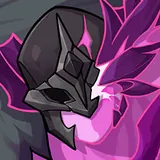

Bài Ca Không Nguyệt · Màn III
Vương Quốc Không Tồn Tại
Nhiệm vụ Ma Thần — Nod-Krai
Nhân vật xuất hiện
 Nhân vật chính · Nhà Lữ HànhLumineNhà Lữ Hành đến từ thế giới khác. Bị vị thần lạ mặt phong ấn và cướp mất người anh song sinh, cô bắt đầu hành trình đi tìm Bảy Vị Thần của Teyvat.
Nhân vật chính · Nhà Lữ HànhLumineNhà Lữ Hành đến từ thế giới khác. Bị vị thần lạ mặt phong ấn và cướp mất người anh song sinh, cô bắt đầu hành trình đi tìm Bảy Vị Thần của Teyvat. Bạn đồng hànhPaimonĐược Lumine cứu khỏi chết đuối hai tháng trước, Paimon tự nhận làm người dẫn đường cho cô. Hay ăn, hay nói, và rất ghét bị gọi là “thực phẩm dự trữ”.
Bạn đồng hànhPaimonĐược Lumine cứu khỏi chết đuối hai tháng trước, Paimon tự nhận làm người dẫn đường cho cô. Hay ăn, hay nói, và rất ghét bị gọi là “thực phẩm dự trữ”. Chủ nhân Hội Đồng Bí Mật · Quản lý Mạng Lưới Tình Báo Bắc Đại LụcNeferThực hiện nghi thức bí mật thâm nhập mảnh vỡ ký ức Khaenri'ah của Rerir để tìm điểm yếu đối phó.
Chủ nhân Hội Đồng Bí Mật · Quản lý Mạng Lưới Tình Báo Bắc Đại LụcNeferThực hiện nghi thức bí mật thâm nhập mảnh vỡ ký ức Khaenri'ah của Rerir để tìm điểm yếu đối phó.- Đại Đội Trưởng Đội Kỵ Sĩ Tây PhongVarkaTrở về từ Amsvartnir kịp lúc giải cứu cả nhóm và điều phối chiến dịch tác chiến từ căn cứ bí mật.
 “Thiếu Nữ Mặt Trăng” KuutarColumbinaBị Rerir truy sát gắt gao và tìm cách thu hồi sức mạnh từ Tủy Mặt Trăng Hồng Nguyệt.
“Thiếu Nữ Mặt Trăng” KuutarColumbinaBị Rerir truy sát gắt gao và tìm cách thu hồi sức mạnh từ Tủy Mặt Trăng Hồng Nguyệt. Quan Chấp Hành thứ tư của Fatui (“The Knave”)ArlecchinoMang huyết mạch Triều Đại Xích Nguyệt, mở cổng không gian Hồng Nguyệt giải cứu mọi người và tạm giữ Tủy Mặt Trăng Hồng Nguyệt.
Quan Chấp Hành thứ tư của Fatui (“The Knave”)ArlecchinoMang huyết mạch Triều Đại Xích Nguyệt, mở cổng không gian Hồng Nguyệt giải cứu mọi người và tạm giữ Tủy Mặt Trăng Hồng Nguyệt. Quan Chấp Hành thứ bảy của FatuiSandroneChuyển lời của Columbina tới Arlecchino và điều khiển Pulonia cùng đội B.O.S.C.O. cản bước Cuộc Săn Hoang Dã.
Quan Chấp Hành thứ bảy của FatuiSandroneChuyển lời của Columbina tới Arlecchino và điều khiển Pulonia cùng đội B.O.S.C.O. cản bước Cuộc Săn Hoang Dã. Vịnh Nguyệt Sứ, Người Giữ Đèn và trợ thủ Hội Đồng Bí MậtLauma · Flins · JahodaTham gia nghi thức đọc ký ức Rerir và đánh lạc hướng đội quân Cuộc Săn Hoang Dã.
Vịnh Nguyệt Sứ, Người Giữ Đèn và trợ thủ Hội Đồng Bí MậtLauma · Flins · JahodaTham gia nghi thức đọc ký ức Rerir và đánh lạc hướng đội quân Cuộc Săn Hoang Dã. Nhóm Xưởng Krumkake Clink-ClankAino · IneffaChế tạo mồi nhử đánh lạc hướng Rerir và lên đường điều tra bí ẩn ở Amsvartnir.
Nhóm Xưởng Krumkake Clink-ClankAino · IneffaChế tạo mồi nhử đánh lạc hướng Rerir và lên đường điều tra bí ẩn ở Amsvartnir. Anh em Căn Nhà Hơi ẤmLyney · Lynette · FreminetĐược Arlecchino phái tới Cục Thiết Kế Thí Nghiệm hỗ trợ Sandrone sửa chữa thiết bị.
Anh em Căn Nhà Hơi ẤmLyney · Lynette · FreminetĐược Arlecchino phái tới Cục Thiết Kế Thí Nghiệm hỗ trợ Sandrone sửa chữa thiết bị. Đại thương nhân Sangemah BayDoriCho Nefer mượn món bảo vật phòng thân đặc biệt để tiến hành nghi thức thâm nhập ký ức.
Đại thương nhân Sangemah BayDoriCho Nefer mượn món bảo vật phòng thân đặc biệt để tiến hành nghi thức thâm nhập ký ức.
“Thợ Săn Ánh Trăng” · Cựu đặc vụ Khaenri'ahRerirTruy sát Columbina, đồng thời lộ rõ quá khứ từng săn giết Tàn Dư Xích Nguyệt dưới trướng Hắc Vương Irmin. Nhân vật trong mảnh ký ức Khaenri'ahTholindis · Dainsleif · VedrfolnirVị hôn thê Tholindis tại Viện Bí Ẩn cùng anh em Dainsleif và “Tiên Tri” Vedrfolnir xuất hiện trong ký ức của Rerir.
Nhân vật trong mảnh ký ức Khaenri'ahTholindis · Dainsleif · VedrfolnirVị hôn thê Tholindis tại Viện Bí Ẩn cùng anh em Dainsleif và “Tiên Tri” Vedrfolnir xuất hiện trong ký ức của Rerir.
Các phần
Toàn bộ lời thoại được lấy từ bản tiếng Việt chính thức của trò chơi. Ở những đoạn người chơi được chọn câu trả lời, truyện chọn một lựa chọn duy nhất.